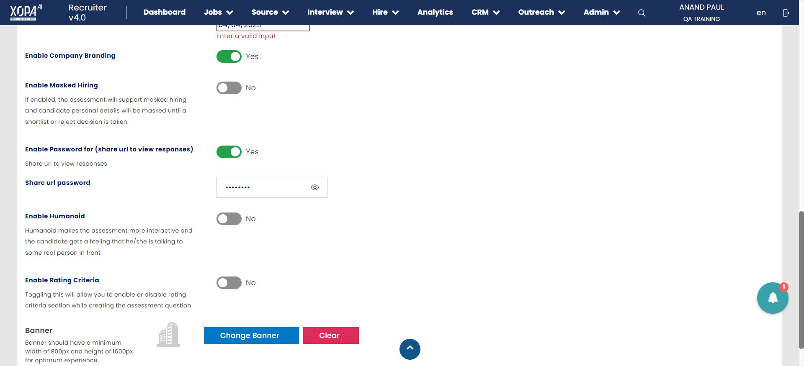

-
assessment creation , reordering questions
9:45:34 AM / 00:00:55:516 Fail
assessment creation , reordering questions
03.28.2023 9:45:34 AM 03.28.2023 9:46:29 AM 00:00:55:516 · #test-id=1Failverify assessment creation and questions setup functionalityGiven Launch Application using "chrome"Browser and valid URL "http://staging.x0pa.ai/app/roboroy"When accept xopatermsAnd choose login typeAnd enters valid credentials "paul@trainingqa.com" and "XPAStag0"And verify captcha and click on Login buttonAnd navigate to interview menuAnd navigate to X0PA ROOMAnd click on create new assessment buttonAnd enter assessment name "AssessmentTC51"And enter information to test takers "welcome to the Assessment !"And keep interview type fixedAnd enable remaindersAnd choose remainder interval "4" days and choose maximum remainders "2" timesAnd enable toggle which allows candidates to cut copy paste for essay type questionsAnd enable toggle which allows candidates to retake the assessmentAnd choose assessment start date and time "03/28/2023, 11:00 AM"And enable toggle which allows candidates to see responses after submission of assessmentAnd choose assessment end date "05/03/2023"And enable company brandingAnd enable password and enter password "XPAStag0" which allows users to review responses securelyAnd click on change banner button to upload assessment banner "UploadFiles//xopabanner.png"And disable rating criteriaAnd click on submit buttonAnd search for assessment "AssessmentTC51"stepDefinitions.LoginPageSD.addScreenshot(io.cucumber.java.Scenario)verify assessment creation and questions setup functionalityAnd click on assessment to navigate to assessment setup pageStep skippedAnd navigate to advanced settings tabStep skippedAnd expand essay type practice questionStep skippedAnd enter instructions to candidates regarding essay type question "Bad punctuation, sentence structure, and poor grammar might lower an otherwise good grade on an essay question."Step skippedAnd enter question "what is software ?"Step skippedAnd select preparation time to answer the question "1" minute "30" secondsStep skippedAnd select maximum time to answer question "1" minute "30" secondsStep skippedAnd choose minimum words "10" and maximum words "15" required to answer the questionStep skippedAnd collapse essay type practice questionStep skippedAnd select multiple choice question which will be displayed as practice question to candidatesStep skippedAnd drag this mcq practice question to the place of first practice questionStep skippedThen verify the practice question "MULTIPLE CHOICE QUESTION (MCQ)" being reordered or notStep skippedAnd expand essay type practice questionStep skippedAnd enter instructions to candidates regarding mcq type question "choose the correct answer"Step skippedAnd enter mcq question "what is Java ?"Step skippedAnd select preparation time to answer the question "1" minute "30" secondsStep skippedAnd select maximum time to answer question "1" minute "30" secondsStep skippedAnd create options "German Language" "Basic Language" "pragramming Language" and "all of the above"Step skippedAnd collapse essay type practice questionStep skippedAnd select vedio type question which will be displayed as practice question to candidatesStep skippedWhen drag this vedio type practice question to the place of first practice questionStep skippedThen verify the practice question "VIDEO" being reordered or notStep skippedAnd expand essay type practice questionStep skippedAnd enter instructions to candidates regarding vedio type question "video should be clear.please reatake vedio if it's not clear.Vedio answer will be rejected automatically if fake person attempts answers"Step skippedAnd enter vedio question "introduce yourself."Step skippedAnd select preparation time to answer the question "1" minute "30" secondsStep skippedAnd select maximum time to answer question "1" minute "30" secondsStep skippedAnd choose number of retakes can candidate take "2"Step skippedAnd choose retake decision time "1" minute "30" secondsStep skippedAnd collapse essay type practice questionStep skippedWhen disable showing number of retakes left to the candidateStep skippedWhen disable toggle to restrict candidates to navigate to previous questionsStep skippedAnd disable save as draft by enabling toggleStep skippedWhen disable assessment summary tableStep skippedAnd enter assessment end text "Congratulations ! You've successfully completed the assessment , results will be announced soon . "Step skippedAnd click on save buttonStep skippedWhen navigate to assessment setup pageStep skippedAnd click on edit button to edit assessment start dateStep skippedAnd choose date "07/03/2023, 7:00 PM"Step skippedAnd click on the submit buttonStep skippedAnd click on edit button to edit assessment end dateStep skippedAnd choose date "14/04/2023, 07:00 PM"Step skippedAnd click on the submit buttonStep skippedAnd click on add custom question buttonStep skippedAnd enter the question "what is manual testing ?"Step skippedAnd click on next buttonStep skippedAnd choose question type as essayStep skippedAnd enter minimum words required to answer this question "5"Step skippedAnd enter maximum words required to answer this question "15"Step skippedAnd click on next buttonStep skippedAnd select preparation time required to question "1" min and "30" secondsStep skippedAnd choose maximum time to answer the question "1" min and "10" secondsStep skippedAnd click on next buttonStep skippedAnd Create or choose a category "HR" this question belongs toStep skippedAnd click on the submit buttonStep skippedAnd click on add custom question buttonStep skippedAnd enter the question "what is Automation testing ?"Step skippedAnd click on next buttonStep skippedAnd choose question type as vedioStep skippedAnd click on checkbox which will allows candidates to retake vedioStep skippedAnd enter number of times candidate can retake vedio "3"Step skippedAnd click on checkbox to decide how much time candidates can take between retakesStep skippedAnd select retake decision time "1" minute and "30" secondsStep skippedAnd click on next buttonStep skippedAnd select preparation time required to question "1" min and "30" secondsStep skippedAnd choose maximum time to answer the question "1" min and "10" secondsStep skippedAnd click on next buttonStep skippedAnd Create or choose a category "HR" this question belongs toStep skippedAnd click on the submit buttonStep skippedAnd click on add custom question buttonStep skippedAnd enter the question "who will do manual testing ?"Step skippedAnd click on next buttonStep skippedAnd choose question type multiple choiceStep skippedAnd give options to the question option a "humans" option b "robots" option c "Manual Testers" option d "computers"Step skippedAnd pick right options from the given options "humans" or "Manual Testers"Step skippedAnd pick red flag options from the given options "computers" or "robots"Step skippedAnd click on checkbox which takes answer as correct if candidate chooses any of the right optionStep skippedAnd click on checkbox which allows candidates to choose only one optionStep skippedAnd click on next buttonStep skippedAnd select preparation time required to question "1" min and "30" secondsStep skippedAnd choose maximum time to answer the question "1" min and "10" secondsStep skippedAnd give score "5" to the questionStep skippedAnd click on next buttonStep skippedAnd Create or choose a category "HR" this question belongs toStep skippedAnd click on the submit buttonStep skippedAnd click on add custom question buttonStep skippedAnd enter the question "selenium"Step skippedAnd click on next buttonStep skippedAnd choose question type ratingStep skippedAnd rating option a "Excellent" and score for the option "25"Step skippedAnd click on add message to add next option and scoreStep skippedAnd rating option b "Very Good" and score for the option "20"Step skippedAnd click on add message to add next option and scoreStep skippedAnd rating option c "Good" and score for the option "15"Step skippedAnd click on add message to add next option and scoreStep skippedAnd rating option d "Average" and score for the option "10"Step skippedAnd click on next buttonStep skippedAnd select preparation time required to question "1" min and "30" secondsStep skippedAnd choose maximum time to answer the question "1" min and "10" secondsStep skippedAnd click on next buttonStep skippedAnd Create or choose a category "HR" this question belongs toStep skippedAnd click on the submit buttonStep skippedAnd close the browserStep skipped
-
org.openqa.selenium.ElementNotInteractableException
1 tests
org.openqa.selenium.ElementNotInteractableException
1 failedStatus Timestamp TestName Fail 09:46:25 AM And search for assessment "AssessmentTC51" assessment creation , reordering questions.verify assessment creation and questions setup functionality.And search for assessment "AssessmentTC51"
-
@addcand
1 tests
@addcand
1 failedStatus Timestamp TestName Fail 09:45:34 AM verify assessment creation and questions setup functionality assessment creation , reordering questions.verify assessment creation and questions setup functionality
Started
Mar 28, 2023 09:45:31 AM
Ended
Mar 28, 2023 09:46:30 AM
Features Passed
0
Features Failed
1
Features
Scenarios
Steps
Timeline
Tags
| Name | Passed | Failed | Skipped | Others | Passed % |
|---|---|---|---|---|---|
| @addcand | 0 | 1 | 0 | 0 | 0% |